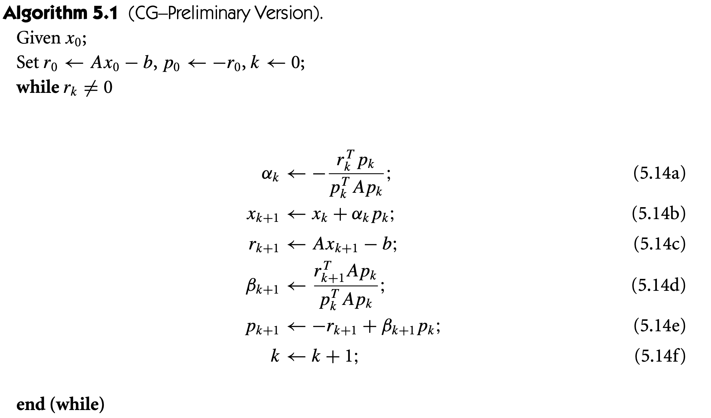

First intuitive thing when saying \( f\) is the local minimum, the gradient \( g=\nabla f=0\), since there's no direction gradient could point to, we could decrease the function by following negative gradient. And its hessian at local minimum \( H=\nabla ^{2} f\geqslant 0\) is positive semi-definite (\( S_{+}\)). Note however that the converse is not true, the gradient \( g=0\) does not implied local minimum. For example, if \( f=x^{3}\) and \( \nabla f=3x^{2} =0,\ x=0\) but is not either local minimum or maximum, it is saddle point. Since second derivative tells us about concavity, thinking only single variable, positive \( d^{2} f\) is when \( f\) is concave upward, and negative when downwards. So does the hessian \( H\), it is positive semi-definite when \( f\) is concave upward, \( f( x_{0}) < f( x)\) around its neighborhood. Note also that the converse is not true. This is called neccessary condition, the condition that go one direction,\( \Rightarrow \)but not\( \Leftarrow \)(sufficient condition).
\(Theorem\) 1 (Necessary condition) if \( x^{*}\) is local minimizer and \( f\) is twice differentiable, then \( \nabla f\left( x^{*}\right) =0\) and \( \nabla ^{2} f\left( x^{*}\right) =0\) is positive semi-definite.
\(Theorem\) 2 (Sufficient condition) if \( g=\nabla f\left( x^{*}\right) =0\) and \( \nabla ^{2} f\left( x^{*}\right)\) is positive definite, then \( x^{*}\) is a strict local minimizer of \( f\).
Note that when \( f( x_{0})\) is saddle point, the eigenvalue will be the mixed of positive and negative but gradient will be zeros, so it is no sufficient of zeros gradient. Note also what it mean to say we can still following the negative gradient direction: let \( p=-\nabla f\), the direction of negative gradient so \( p^{T} \nabla f=-\| \nabla f\| ^{2}\). Suppose \( f\) is continuous, for some small \( t\), \( p^{T} \nabla f\left( x^{*} +tp\right) < 0\). Forming taylor expansion, \( f\left( x^{*} +tp\right) =f\left( x^{*}\right) +p^{T} t\nabla f\left( x^{*} +tp\right) < f\left( x^{*}\right)\), there exist direction \( p\) in which it minimize \( f\). This is applicable when we assume the gradient is not zero. It can be done also for hessian by assuming \( H\) is not positive semi-definite and forming second-order taylor expandsion. This borrow from book numerical optimization.Convex function ## see more about convex optimization on lecture *** \( f\) is convex if and only if \( \nabla ^{2} f\geqslant 0,\ \forall x\in domf\). \( f\) is strict convex if \( \nabla ^{2} f >0\), \( \forall x\in domf\), the converse is not true. \( f\) is strong convex if and only if \( \nabla ^{2} f\geqslant m\geqslant 0\), \( \forall x\in domf\). Recall (for ref.): Taylor expansion \begin{gather} f( x+p) =f( x) +\nabla f( x+tp)^{T} p,\\ \nabla f( x+p) =\nabla f( x) +\int _{0}^{1} \nabla ^{2} f( x+tp) p\ dt\\ f( x+p) =f( x) +\nabla f( x)^{T} p+\frac{1}{2} p^{T} \nabla ^{2} f( x+tp) p \end{gather} and \( \ t\ \in ( 0,1) ,\ f:\ \mathbb{R} ^{n}\rightarrow \mathbb{R} \ \)is twice differentiable. Note that to be convex, the hessian \( H\) must be positive semi-definite, it is a bowl and is concave upward. For one variables, \( f^{''}( x) \geqslant 0,\forall x\in domf\), \( f\) has nonnegative curvature. Since, from necessary condition, the local minimum of convex function is its global since the hessian of convex function is positive semi-definite. The degree of smoothness can be quantified by Lipschitz continuous which say if we change \( x\) by unit, the different to objective cannot more some value of \( K\), \( |f( x_{0}) -f( x_{1}) |\leqslant L|x_{0} -x_{1} |\), in other word, it limit how fast \( f\) can change. For non-smooth problem such as regularized objective in machine learning, we seperate \( f=f_{smooth} +f_{nonsmooth}\) where the second term is, for example L2 norm of the parameters.
Descent direction: \( p\) #\( p\) is descent if angle between \( p\) and gradient is less that \( \pi /2\) and \( p^{T} g< 0\). Consider the objective \( f( \theta )\), \( p\) is descent direction if it exist \( f( \theta +\alpha p) < f( \theta )\), we found small objective after following that direction. The question is what is an appropriate constant \( \alpha \) (step-size) and direction \( p\) that result in reduction in objective function \( f\). So we have update rule starting from some initial guess, \( x_{k}\), \( x_{k+1} =x_{k} +\alpha _{k} p_{k}\), I will later use \( x\) in place of \( \theta \) interchangeably. Recall: The gradient vector \( \nabla f\cdot d\vec{r} /dt=0\), the gradient vector is orthogonal to tangent line where the tangent is pointing in the same direction as level curve. The directional derivative, \( D_{p} =p^{T} \nabla f=||\nabla f||\ ||p||\cos \theta \) (from definition). The point here is to varying \( \theta \) such that it result in decrease/increase in \( f\). If \( \theta =\pi /2\), \( \cos \theta =0\) and we travel along level curve \( d\vec{r} /dt\), then there is no change in \( f\). This is not of interest. When \( \theta =0\) and \( \theta =\pi \), the direction \( p\) is parallel to gradient \( \nabla f\) and so a steepest direction. We can go any direction by varyiny \( \theta \) and still in descent direction if \( 0\leqslant \theta \leqslant \pi /2\). Thus \( ||\nabla f||\ ||p||\cos \theta < 0\). The same go for ascent direction but change the sign. Another way to think about this is we like to find the maximum slope, \begin{equation} \mathbf{max}_{p} D_{p} =\mathbf{max}_{p} p^{T} \nabla f \end{equation} The solution is \( p=\nabla f/||\nabla f||\) when \( \cos \theta =1\). The same go for descent direction, change max to min. Actually I could just mension only the degree of \( \theta \) in descent direction, why bother with ascent on since it's identical.
Assume already determined the direction \( p_{k}\), the goal is to find \( \alpha \) that best minimize \( \Psi _{k}( \alpha )\). Exhaustive evaluation is an ideal but is not tractable in general, this is called exact line search. Inexact line search on the other hand choose \( \alpha \) that also minimize \( \Psi \) (hense the reduction in original \( f\)) and is satisfied some condition. Wolfe Condition: (sufficient decrease) require \( \alpha _{k}\) to satisfy the reduction test in \( f\): \( f( x_{k} +\alpha p_{k}) \leqslant f( x_{k}) +l( \alpha )\), and \( l( \alpha ) =c_{1} \alpha \nabla f_{k}^{T} p_{k}\)(Armijo condition). The condition say that \( \Phi ( \alpha ) =f( x_{k} +\alpha p_{k})\) must be \( \Phi ( \alpha ) \leqslant l( \alpha )\) so that the step size \( \alpha \) is acceptable. Note that \( l( \alpha )\) is linear and line above \( \Phi \). But the function \( \Phi ( \alpha )\) can contain many values, to ensure that the algorithm make the progression or the best step size, we require curvature condition. (Curvature Condition) require \( \alpha _{k}\) to satisfy \( \nabla f(x_{k} +a_{k} p_{k} )^{T} p_{k} \geq c_{2} \nabla f(x_{k} )^{T} p_{k}\) where \( c_{2} \in [ c_{1} ,1]\), typically 0.9. It tells us that the step shoud be large enough. - Gradient descent (Other variants of gradient descent can be found in my machine learning lecture series.) Convergence (theorem 3.2 of numerical optimization) With gradient bounded Lipshitz continuous, GD converges at a linear rate with \( \mu \) (rate of converge)\( |f( x_{k+1}) -f\left( x^{*}\right) |\leqslant \mu |f( x_{k}) -f\left( x^{*}\right) |\). And \( \sum _{k}\cos^{2} x_{k} ||\nabla f_{k} ||^{2} < \infty \), where \( \cos x_{k} =\frac{-\nabla f_{k}^{T} p_{k}}{\| \nabla f_{k} \| \ \| p_{k} \| }\) The Zoutendijk condition implies that \( \cos^{2} x_{k} ||\nabla f_{k} ||^{2} < \infty \), this limit can be used to derive global convergence results for line search algorithm (for example, where \( f\) is a quadratic form). (p.280 Murphy) We can be sure that \( \| \nabla f_{k} \| \rightarrow 0\) (approach critical point) provided that search direction \( p\) are never (always) close to orthogonality with gradient (parallel with \( \nabla f\)). If the chosen line search ensure that \( \theta _{k} < \pi /2\) then \( \cos \theta _{k} \geqslant \delta >0\) for all \( k\) and that \( \lim _{k\rightarrow \infty } \| \nabla f_{k} \| =0\). In steepest descent, as mentioned, \( p\) is parallel to negative gradient \( -\nabla f\) and that \( \lim _{k\rightarrow \infty } \| \nabla f_{k} \| =0\), sequence of gradient converge to zeros provided that it use a line search satisfied Wolfe or Goldstein condition. This view is the key property to designing algorithm such that the search direction is not tend to orthogonal to gradient \( \nabla f\) since, intuitively, can be think like circle around the mountain but never go up and down. We could compute cos\theta_k at every iteration and turn \( p\) toward steepest direction if \( \cos \theta _{k} \geqslant \delta >0\). But this are undesirable, inappropriate \( \delta \)may slow down convergence rate (ill-conditioned Hessian, rapid change in gradient) that may necessary to produce \( p\) almost orthogonal to gradient.
Optimize over expectation of objective, \( \mathbb{E}_{p( x)}[ L( \theta ,x)]\) where \( x\) is input to objective for example neural network parametrized by \( \theta \). It is stochatics since \( x\) is sampled from \( p\) and assuming \( \theta \) is independent from distribution \( p\). In emprical risk mininization, the gradient can be, instead of full gradient of \( N\) term, approximate by minibatch of size \( D\), \( g=\frac{1}{|D|}\sum _{n=1}^{D} \nabla _{\theta } L\). (control variate) SGD. note that this technique is difficult in many application is DL. 1. SVRG : \( g_{k} =\nabla L_{t}( \theta ) -\nabla L_{t}\left(\tilde{\theta }\right) +\nabla L\left(\tilde{\theta }\right)\)The gradient \( g_{t}\) is unbiased, \( \mathbb{E} _{t}\left[ \nabla L_{t}\left(\tilde{\theta }\right)\right] =\nabla L\left(\tilde{\theta }\right)\), the term vanished. The baseline gradient \( \nabla L_{t}\left(\tilde{\theta }\right)\) is fixed. The inner loop use effort same as SGD, it only need to compute \( \nabla L_{t}( \theta )\) and \( \nabla L_{t}\left(\tilde{\theta }\right)\). The outer loop require full batch gradient which will be used to compare to stochastic in the inner loop, \( \nabla L_{t}( \theta )\). 2. SAGA see more #TODO <;p>
\( x_{k+1}\leftarrow x_{k} +\alpha _{k} M_{t}^{-1} \nabla f( x_{k})\) Let matrix \( M_{k}\) is symetric positive-definite and \( M_{k} =A_{k}^{T} A_{k}\). Let \( \hat{x} =A_{k}^{T} x\), a linear transformation of \( x\) so \( x=A_{k}^{-T}\hat{x}\). We optimized over transformed \( \hat{x}\), \( \hat{x}_{k+1}\leftarrow \hat{x}_{k} +\alpha \nabla f(\hat{x})\). Calculating the derivative : \begin{gather} \hat{x}_{k+1}\leftarrow \hat{x}_{k} +\alpha \nabla f\left( A_{k}^{-T}\hat{x}_{k}\right)\\ \hat{x}_{k+1}\leftarrow \hat{x}_{k} +\alpha A_{k}^{-1} \nabla f\left( A_{k}^{-T}\hat{x}_{k}\right)\\ A_{k}^{-T} x_{k+1} =A_{k}^{-T}\hat{x}_{k} +\alpha A_{k}^{-1} \nabla f(\hat{x}_{k})\\ A_{k}^{-T} A_{k}^{-T} x_{k+1} =A_{k}^{-T} A_{k}^{-T}\hat{x}_{k} +\alpha A_{k}^{-T} A_{k}^{-1} \nabla f( x_{k})\\ x_{k+1}\leftarrow x_{k} +\alpha M_{k}^{-1} \nabla f( x_{k}) \notag \end{gather} where \( M\) is preconditioned matrix. In practice it is diagonal matrix, it require less computation. This can be hessian but in SGD, to gradient estimate is often noise aand hard to use method that approximate hessian based on gradient such as GFGS. For example the update it AdaGrad can be viewed as preconditioned gradients: \) \)\( M_{T} =diag( s_{t} +eps)^{1/2}\) where square root is element-wise and \( s\) is summed of squared gradient, the update is \( \theta _{k+1}\leftarrow \theta _{k} -\alpha _{k} /g\sqrt{s+eps}\). Full preconditioned matrix \( M\), for adagrad, Full-matrix Adagrad is also possible. (see more Murphy p.295) In addition, to determine that the direction, \( p_{k} =-M_{k}^{-1} \nabla f( x_{k})\) is in descent direction, \( \nabla f( x_{k})^{T} p_{k} =-\nabla f( x_{k}) M_{k}^{-1} \nabla f( x_{k}) < 0\) is descent direction (\( M\) is \( S_{++}\)).
1. Newton Method: Let first forming second-order taylor approximation to \( f\) that we want to optimize over: \begin{equation} f( x+p) =m_{k}( x) \approx f+\nabla f^{T}( x) p+\frac{1}{2} p^{T} \nabla ^{2} f( x+tp) p \end{equation} Taking its derivative and set to zeros yield \( \nabla m_{k}( x) =0,\nabla f+\nabla ^{2} fp\), so the search direction is \( p=-\nabla f/\nabla ^{2} f\). The update rules is then \( x_{k+1}\leftarrow x_{k} +\alpha p_{k} =x_{k} -\alpha H^{-1} g\). This assuming that the hessian is postive-definite, but this isn't always the case. So we could integrate this direction to gradient descent if the approximation if well good, since the update rules is derived from quadratic approximation \( m_{k}( x)\) not the true function \( f_{k}( x)\). We could also incorporate linesearch too. The procedure of computing is first evaluete gradient and hessian (exact hessian) and solving the linear system, \( H_{k} p=-g_{k}\) for \( d\) using either elimination or conjugate gradient method etc.. and perform line search \( \alpha \) in the direction of \( p=-g/H^{-1}\). Note that most implementation use \( \alpha =1\) and decrese if function not decrease. And if hessian isn't positive definite, the inverse do not exist. Recall: Semidefinite matrix has at least one 0 eigenvalue so it vanishes the determinant. This is singular and not invertible. As a result, cannot apply the direction. This is solved by modifying hessian while preserve the information in hessian. We can see that the gradient descent is special case of modified newton method where the hessian is replaced by identity, meaning that no second-order information such as curvature or skewness that gained from hessian. 2. Quasi-Newton Method This is newton's method with approximated hessian. We write, from Taylor’ theorem, \begin{equation*} \nabla f( x+p) =\nabla f( x) +\int _{0}^{1} \nabla ^{2} f( x+tp) p\ dt \end{equation*} , and setting \( x=x_{k}\) and \( p=x_{k+1} -x_{k}\), we have ( size of final integral is \( O( \| p\| )\) .) \( \nabla f_{k+1} =\nabla f_{k} +\nabla ^{2} f_{k}( x_{k+1} -x_{k}) +O( \| x_{k+1} -x_{k} \| )\). We approximate a new Hessian \( B\) that mimics the property \( \nabla ^{2} f_{k}( x_{k+1} -x_{k}) \approx \nabla f_{k+1} -\nabla f_{k}\) and satisfied secant equation: \( B_{k+1} s_{k} =y_{k}\), where \( s_{k} =x_{k+1} -x_{k}\) and \( y_{k} =\nabla f_{k+1} -\nabla f\). We typically set condition on \( B\), for example, symmetry (exact Hessian is symmetry) and two successive \( B_{k+1}\) and \( B_{k}\) has low rank. Two popular formulae for updating Hessian are symmetric-rank-one and BFGS. We then can replace approximate in newton direction as \)p_{k} =-B_{k}^{-1} \nabla f_{k}\). In practice we can update inverse of Hessian instead of the need to factorize/back-substitution of stated updating formula, we applied \( H=-B_{k}^{-1}\) and use \( p_{k} =H_{k} \nabla f_{k}\). In summary, often search direction has the form of \( p_{k} =-B_{k}^{-1} \nabla f_{k}\) where \( B\) is identity for steepest descent, and exact Hessian for Newton’s method and approximate Hessian for quasi-Newton.
Originaly design for solving linear system of \( Ax=b\), is equivalent to miniming convex quadratic function of the form \( \phi ( x) =1/2\ x^{T} Ax-b^{T} x+b\), assuming \( A\) is \( S_{++}\). This method has the form \( p_{k} =-\nabla f( x_{k}) +\beta _{k} p_{k-1}\) where \( \beta _{k}\) ensure that the two successive \( p_{k}\) and \( p_{k+1}\) is conjugate. Its performance is determined by the distribution of eigenvalues of matrix \( A\), it can also be preconditioned to make it more efficient on improving convergence. Note that we differentiate \( f\) and set to zero to obtain similar linear system. The gradient \( \nabla \phi ( x)\) is the residual of the linear system: \( \nabla \phi ( x) =b-Ax=r\), satisfies \( r=0\). We can measure how much the solution yeild from CG failed to deviate from true solution by relative residual: \( \delta =\| r\| /\| b\| \). Note that CG generate sets of vectors with a conjugcy property: A set of nonzeros vectors \( \{v_{i}\}\) is said to be conjugate with respect to positive definite matrix \( A\) if \( p_{i}^{T} Ap_{j} =0\) for all \( i\neq j\). It can be showed that it is also linearly independent. We update \( x_{k+1}\leftarrow x_{k} +a_{k} p_{k}\), where \( a_{k}\) is one-dimensional minimizer off quadratic function\( \phi \) along \( x_{k} +a_{k} p_{k}\), given by \)a_{k} =-\frac{r_{k}^{T} p_{k}}{p_{k}^{T} Ap_{k}}\). This can be shown by simply differentiating and set it to zero then solve for \( a_{k}\): (exercise 3.3). We arrive at following theorem:
Note that CG is less memory consumption since its require only previous \( p_{k-1}\) in generating conjugate set \( p_{k}\). Note in numerical optimization definded residual as \( r=Ax-b\). So the search direction is linear combination of negative residual \( -r_{k}\) and \( p_{k-1}\): \( p_{k} =-r_{k} +\beta _{k} p_{k-1}\). And (5.14d) can be obtained by multiplying \( p_{k} =-r_{k} +\beta _{k} p_{k-1}\) by \( p_{k-1}^{T} A\) and use conjugacy property: \( p_{k-1}^{T} Ap_{k} =0\). The first search direction \( p_{0}\) is chosen to be descent direction. Theorem 5.3 (5.16) suggest that residuals \( r_{k}\) are mutually orthogonal. Each search direction and residual is contained in Krylov subspace of degree \( k\) for \( r_{0}\) defined as \( \mathfrak{R} ( r_{0} ;k) \equiv \mathbf{span}\left\{r_{0} ,Ar_{0} ,...,A^{k} r_{0}\right\}\). More practical version of CG is replacing (5.14a) by \( a_{k} =-\frac{r_{k}^{T} r_{k}}{p_{k}^{T} Ap_{k}}\) and (5.14b) by \( \beta _{k} =\frac{r_{k+1}^{T} r_{k+1}}{r_{k}^{T} r_{k}}\)(see p.111).
Key idea is to transform \( x\) to \)\hat{x} =Cx\), where C is nonsingular (i.e., Zero det and invertible). And transform quadratic \( \phi \) by \)\hat{\phi }(\hat{x}) =\frac{1}{2} x^{T} (C^{-T} AC^{-1} )\hat{x} -\left( C^{-T} b\right)^{T}\hat{x}\) and is equivalent to solve the linear system \)(C^{-T} AC^{-1} )\hat{x} =C^{-T} b\). The convergence rate depend on eigenvalues of \)C^{-T} AC^{-1}\) and we choose \)C\) such that the eigenvalues are more favorable (see p. 112 for theoretical analysis of convergence rate). We can choose \)C\) such that condition number is smaller than original one or such that the eigenvalues of transformed matrix are clustered. It unnecessary to use direct transformation, rather, we apply \)\hat{x}\) in algorithm then revert equation in terms of original \( x\). The matrix M do not use \)C\), but rather \( M=C^{T} C\), which is symmetric and positive definite by construction. If \( M=\mathbb{I} \), it reduces to standard CG. The orthogonal property of \( r_{j} r_{i} =0\) becomes \( r_{j} M^{-1} r_{i} =0\), for all \( i\neq j\). Some general precondition strategies include (SSOR), incomplete Cholesky, and banded preconditioners. In general, there is no exact strategy that is best, it’s depend on problem. Nonlinear CG method This apply to problem of minimizing general convex functions or nonlinear functions. This is well studied method and proved to be quite successful. Some method include: Fletcher-Reeves Method Polak-Ribiere method and its variants Quadratic termination and Restarts

created with
Website Builder Software .